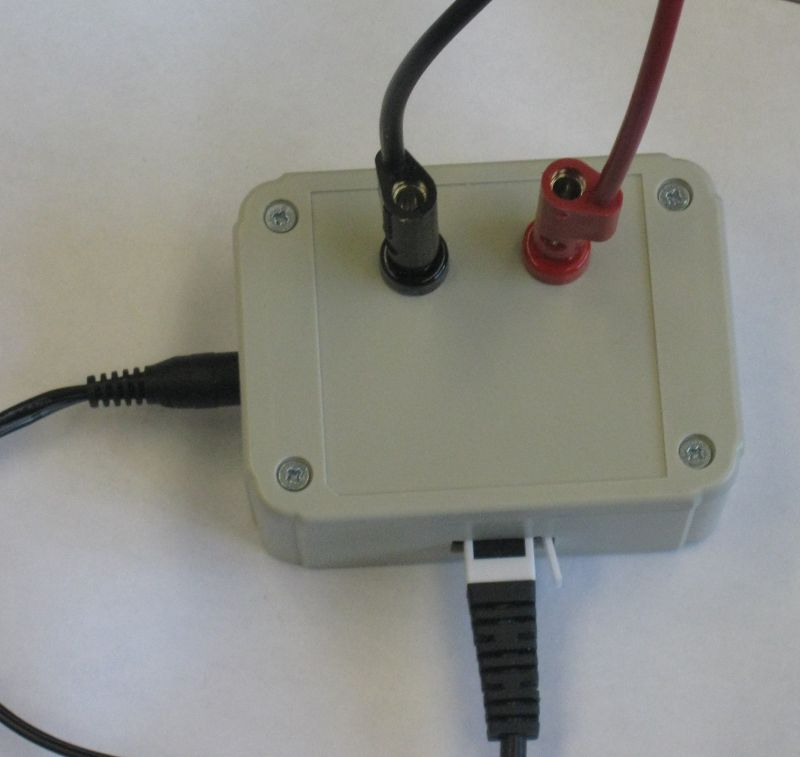

By Dan Peirce B.Sc. July 15, 2013 (revised Sept. 20, 2013)
The prototype photometer for Richmond ASTR1100 has been completed. I now have all the parts for 10 units (except I need to pick up some more threaded rod for the vertical support).
The parts that attache the sensor tube to the support rod were created with a 3D printer. The design for the part was done in an open source program called OpenSCAD. When these parts were printed they were made with a shell and fill. The fill is actually mostly voids so the parts are very light.


For more on OpenSCAD see http://members.shaw.ca/danielpeirce/notes/printer3d.html#3d-modeling-software
Regarding the connectors visible here.

This board is attached to the lid of the box.

An example of the board attached to the lid and wired is shown in the next photo.